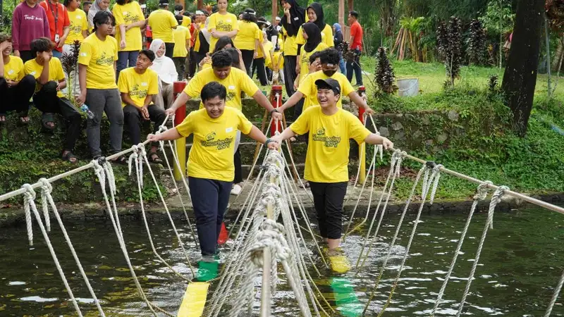

Manfaat outbound edukatif berkurikulum bagi siswa mencakup penguatan karakter, peningkatan kerja sama tim, dan pemahaman materi pelajaran yang lebih mendalam melalui pengalaman belajar langsung di luar kelas.
- Program ini melatih kerja sama tim dan kepemimpinan siswa melalui tantangan kelompok
- Siswa memperoleh pemahaman materi pelajaran secara lebih kontekstual dibanding metode ceramah
- Kepercayaan diri siswa meningkat melalui aktivitas yang mendorong keluar dari zona nyaman
- Sekolah memperoleh data evaluasi karakter siswa yang lebih kaya dari observasi lapangan
- Manfaat optimal tercapai apabila modul dirancang selaras dengan tujuan kurikulum
Bagaimana Outbound Edukatif Berkurikulum Melatih Kerja Sama Tim Siswa?
Outbound edukatif berkurikulum melatih kerja sama tim siswa melalui tantangan kelompok yang mengharuskan mereka berkoordinasi, berkomunikasi, dan saling mendukung untuk mencapai tujuan bersama.
Dalam banyak modul aktivitas, siswa dihadapkan pada rintangan yang tidak dapat diselesaikan sendirian, sehingga mereka dipaksa membangun strategi kelompok. Proses ini melatih kemampuan mendengarkan pendapat teman, membagi tugas, dan menyelesaikan konflik kecil yang muncul selama aktivitas berlangsung.
Sebuah kajian tentang pembelajaran kolaboratif di lingkungan luar kelas yang dipublikasikan lembaga pendidikan luar negeri pada periode 2022-2024 mencatat bahwa metode belajar berbasis kelompok di lapangan cenderung meningkatkan partisipasi aktif siswa dibandingkan diskusi kelompok di dalam kelas.
Apa Dampak Program Ini terhadap Kepemimpinan Siswa?
Dampak outbound edukatif berkurikulum terhadap kepemimpinan siswa terlihat dari kesempatan mereka mengambil peran memimpin kelompok dalam situasi yang menuntut keputusan cepat dan tanggung jawab bersama.
Setiap sesi biasanya dirancang agar peran kepemimpinan bergilir, sehingga bukan hanya siswa yang sudah percaya diri yang mendapat kesempatan memimpin. Siswa yang cenderung pasif di kelas sering kali menunjukkan potensi kepemimpinan berbeda saat berada dalam konteks aktivitas fisik dan permainan tim.
Fasilitator biasanya turut mengamati pola kepemimpinan yang muncul secara alami, kemudian menjadikannya bahan diskusi pada sesi refleksi agar siswa menyadari kekuatan dan area yang perlu dikembangkan.
Bagaimana Program Ini Membantu Siswa Memahami Materi Pelajaran?
Outbound edukatif berkurikulum membantu siswa memahami materi pelajaran dengan mengaitkan konsep teoretis dengan pengalaman fisik yang mereka alami langsung, sehingga materi terasa lebih konkret dan mudah diingat.
Misalnya, konsep kerja sama dalam pelajaran kewarganegaraan dapat diperkuat melalui simulasi tantangan kelompok, atau konsep fisika sederhana dapat dijelaskan melalui permainan yang melibatkan keseimbangan dan gaya. Pendekatan ini dikenal efektif karena melibatkan lebih dari satu jenis kecerdasan, yaitu kinestetik, sosial, dan kognitif secara bersamaan.
Guru pendamping berperan penting dalam menjembatani pengalaman lapangan dengan materi ajar melalui sesi diskusi setelah aktivitas selesai.
Apakah Program Ini Berpengaruh pada Kepercayaan Diri Siswa?
Outbound edukatif berkurikulum berpengaruh pada kepercayaan diri siswa karena aktivitas yang menantang secara fisik maupun mental mendorong mereka keluar dari zona nyaman dan membuktikan kemampuan diri secara langsung.
Ketika siswa berhasil menyelesaikan tantangan yang awalnya terasa sulit, mereka memperoleh bukti nyata atas kemampuannya sendiri, bukan sekadar pujian verbal. Pengalaman keberhasilan semacam ini cenderung membekas lebih lama dibandingkan pencapaian akademik semata.
Sebaliknya, kegagalan dalam suatu tantangan juga dijadikan bahan pembelajaran penting mengenai ketahanan mental, selama fasilitator mendampingi proses refleksi dengan pendekatan yang suportif.
Bagaimana Sekolah Dapat Mengukur Manfaat Program Ini secara Objektif?
Sekolah dapat mengukur manfaat outbound edukatif berkurikulum secara objektif melalui observasi perilaku selama kegiatan, umpan balik siswa pasca-kegiatan, dan evaluasi bersama guru pendamping terhadap capaian tujuan pembelajaran yang telah ditetapkan.
Beberapa cara yang umum digunakan sekolah untuk mengukur dampak program meliputi:
- Lembar observasi karakter yang diisi fasilitator dan guru pendamping selama kegiatan
- Sesi diskusi reflektif dengan siswa setelah program selesai
- Perbandingan sikap kerja sama siswa di kelas sebelum dan sesudah kegiatan
- Umpan balik tertulis dari orang tua mengenai perubahan sikap anak di rumah
Detail mengenai cara memilih penyedia yang mampu mendukung proses evaluasi ini dibahas pada artikel cara memilih penyedia jasa outbound edukatif berkurikulum yang tepat.
FAQ
Apakah outbound edukatif berkurikulum hanya bermanfaat untuk aspek karakter saja?
Tidak. Program ini juga membantu penguatan pemahaman materi pelajaran secara kontekstual, selain manfaat pada aspek karakter dan kerja sama tim.
Apakah manfaat program ini dapat dirasakan dalam satu kali kegiatan?
Manfaat awal seperti peningkatan kepercayaan diri dapat terasa dalam satu kegiatan, namun dampak jangka panjang pada karakter umumnya membutuhkan program yang berkelanjutan.
Apakah siswa yang pemalu tetap bisa mendapatkan manfaat dari program ini?
Ya, modul yang dirancang dengan baik biasanya mengakomodasi berbagai karakter siswa, termasuk siswa yang cenderung pemalu, melalui peran dan tantangan yang bervariasi.
Arya
penulis artikel yang sudah berpengalaman di dalam dunia wisata outbound Batu Malang.